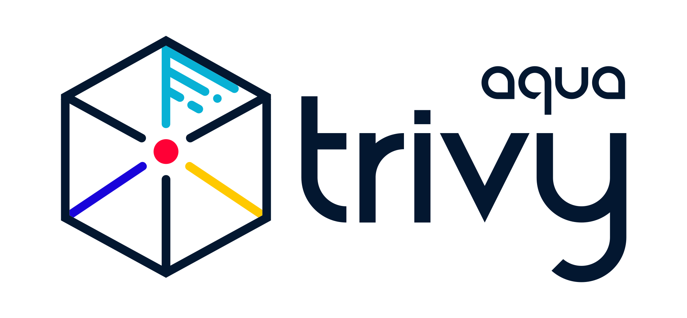

DevSecOpsをOSSで組み立てる統合ダッシュボードと用途別構成
複数の検査結果をまとめて、修正まで追いたいなら、まずDefectDojo OSSを評価する。部品表を保存して新しい脆弱性に備えたいなら、Dependency-Trackを補完に使う。
最初に決めるのは「何を検査するか」と「誰が修正を管理するか」。検査する道具、結果を整理する台帳、更新するbotは役割が違う。必要な役割だけをつなぐ。
少数のGitHubリポジトリなら、既存の通知・一覧ツールを育てる選択もある。すべての製品を同時に導入する必要はない。
この記事の推奨構成は公式仕様と公開コードからの評価・提案です。各製品の導入、実データの取り込み、負荷・料金の計測は実施していません。動作や互換性が未確認の点は、導入前の試験項目として示します。
検査・集約・修正を分けて考える
DevSecOpsは開発と運用の流れにセキュリティ確認を組み込む考え方。ここでは、検査結果を一度表示して終わらせず、担当者が判断し、修正し、再検査で確認する仕組みに絞って考える。
検査した結果を、修正につながる台帳へ
Dependabotの取得・形式変換
コード検査・動作中Webの検査など
対象別に整理・再取り込み
担当・判断・履歴を管理
必要な差分だけ通知
修正PR・設定変更
検出する役割整理・追跡する役割
Grafanaは件数や推移を見る補助に向く。Prometheus・Loki・SQLなどに保存したデータを問い合わせて可視化する製品であり、それだけで検査結果の重複判定や修正履歴の台帳が完成するわけではない。[27]
統合基盤の第一候補はDefectDojo
異なる種類の検査結果を集め、同じ結果の再投入や修正後の変化を追うことが目的なら、DefectDojoを最初の評価候補にする。SBOMに特化するDependency-Trackとは、入口も管理する対象も違う。
表は横にスクロールできます。キーボードでは表を選び、左右キーで移動できます。
| 候補・ライセンス | 主な役割と入口 | 採用に向く条件 | 境界・運用上の論点 |
|---|---|---|---|
| DefectDojo OSS 第一評価候補 BSD-3-Clause | Trivy等のレポートをUI/APIで取り込み、検出事項と判断履歴を管理。[1][2] | 複数repo・複数種類の検査をまとめ、担当と修正状況を追いたい。 | OSSでも条件をそろえたhashでtool間を照合可能。専用のcross-tool設定UI・Global等の拡張やupstream connectorはPro。DB、worker、添付ファイルの保守が必要。[3][5][6] |
| Dependency-Track 5.2 SBOMの補完 Apache-2.0 | ソフトウェアの部品表を保存し、部品の脆弱性・ライセンス・policyを継続解析。[7][8] | リリース済みの製品についても、新たに公表された脆弱性を調べたい。 | 汎用SAST/DAST結果の台帳とは別。v5はPostgreSQLが必要。v4からは別DBへの移行手順を使う。[9][10] |
| Faraday Community GPL-3.0 | ペンテスト・ネットワーク検査を含むレポート集約。Trivy JSON pluginあり。[11] | すでに使う検査ツールとのparser対応を重視したい。 | Dependabot Executorは存在するが、CommunityでのAgent連携範囲と自動close/reopenは未確認。複数processの保守も評価する。[12] |
| ArcherySec GPL-3.0 | Web/network等のscan起動と結果管理。CLIでTrivy対応あり。[13] | 検査の実行もまとめたい。採用版で形式と再取り込みを試験できる。 | 現行Trivy形式、Dependabot標準連携、再発時の扱いは未確認。公式READMEは内部利用限定・公開禁止と明記。[13] |
| OWASP secureCodeBox Apache-2.0 | Kubernetes上でscannerとhookを連鎖実行。DefectDojoへ保存するhookあり。[14] | 既存Kubernetesで検査の実行基盤を統一したい。 | 人が判断する台帳本体とは別。cluster/RBAC、jobs、storage、hookの運用が増える。採用版の再取り込み方針は試験する。 |
用途に合う小さな構成から始める
次の4つは導入を判断するための構成案。まず1つを選び、足りない役割だけを追加する。更新botも、同じ依存関係を扱うDependabotとRenovateを最初から重ねる必要はない。
既存の通知・一覧を育てる
入力がDependabotとコンテナ検査など少数なら、既存アプリへレポート入力と履歴を足す。使い慣れた日本語の説明や通知を残せる。
既存の収集・一覧・通知
＋ Trivy入力アダプター
＋ 検査の範囲と状態履歴
parser更新、誤った解消判定の防止、権限と監査を自分で保守する選択。具体的な改善点は後述。
小規模なGitHub中心
依存更新はDependabotまたはRenovate。検査は対象に合う1つから始める。コンテナ・設定中心ならTrivy、依存関係中心ならOSV-Scannerを候補にする。[16][18][22][23]
GitHub Actions
＋ 更新bot 1つ
＋ 主スキャナ 1つ
結果は既存一覧やCI成果物へ。GitHub code scanningへのSARIF表示はrepo種別・Code Securityの条件を先に確認する。[24]
複数リポジトリ・複数の検査を集約
種類の異なる検出事項が増えたら、台帳をDefectDojoへ寄せる。既存アプリは収集アダプターや通知ワーカーとして共存させ、どちらが状態を確定するかを1つに決める。
必要な検査ツールをCIで実行
→ 結果の取得・変換
→ DefectDojo OSS
対象・検査ツールごとに安定したTest（再取り込み先となる検査単位）へ再投入。新規・再発・期限超過を差分通知する設計にする。[2][4]
SBOMを継続監視
出荷後の部品まで追うなら、SyftまたはTrivyでSBOMを生成し、Dependency-Trackへ送る。CIを止める検査と、保存済みの部品を後から調べ直す仕組みを分ける。[8][17]
Syft または Trivy
→ CycloneDX SBOM
→ Dependency-Track 5.2
Dependency-Trackは必須の追加ではない。SBOM資産とライセンスを継続管理する必要がある場合に選ぶ。
SBOMは「その製品に何が入っているか」を残す
プロジェクト・バージョン・イメージのダイジェストと紐づける
部品・脆弱性・ライセンスを解析
保存済みの部品を調べる

既存ツールは、入力と状態管理を拡張する
公開されている dependabot-alert-notice のソースには、Dependabot収集、CVE別・repo別の表示、検索、SQLite保存、AI評価、Slack/Discord通知がすでにある。これらを新機能として作り直すより、異なる検査結果の取り込み方法と、検出から解消までの状態管理を追加するほうが目的に合う。[28][29][30]
以下は2026年11月4日の公開コミットを読んだ結果と改善提案です。実サービスの起動・配備状況・設定・利用者の環境は確認していません。
| すでにあるもの | 追加・変更の提案 | 必要な理由 |
|---|---|---|
| Dependabot収集・SQLite保存 | Trivy JSONのアダプターと、汎用Finding・ScanRunを追加する。 | GitHubのアラート番号を持たない結果、CVEのない設定不備・SASTも扱う。元の出力と取得元のIDを保持する。[28][30] |
| CVE別・repo別表示、検索 | CVEは閲覧用グループとして残し、発生箇所を別の識別子で区別する。 | 同じCVEでもpackage、version、manifest、imageが違えば修正対象が違う。tool＋asset＋rule/package＋location等の安定した指紋を設計する。[29] |
| AI評価と評価の再利用 | 共通の脆弱性説明と、プロジェクト別の影響判断を分ける。 | 公開コードのAI入力はアドバイザリ・パッケージ等のメタデータ。ソースを調べた到達可能性の証明や、修正の安全性確認とは別。[31] |
| 通知・承認・関連PRの処理 | 実際のmerge結果と、その後の解消確認を分ける。新規・再発・期限超過などの状態変化を差分通知する。 | gh pr merge --auto の成功は自動mergeの予約成功の場合もある。修正の承認、merge、検出の解消は別の状態。[32] |
「承認した」から「解消を確認した」までを分ける
「今回の一覧にない」だけで閉じない。既存実装には取得したopen alertsから消えたレコードを削除する処理がある。汎用化するなら、対象scope・取得の完全性・成功を記録し、解消履歴を残す必要がある。severityで絞った結果、pagination途中、認証エラーを「全部直った」と解釈しない。DependabotのFIXEDとDISMISSED／AUTO_DISMISSEDも区別する。未検出を修正済みへ直結させない。[28][30][4]
DefectDojoと共存するなら、修正状態を確定する台帳と、通知を送る側を決める。両方から独立してclose/reopenや通知を行う設計は避け、取得元のレコードIDと詳細へのリンクを残す。権限、期限つき例外、永続的な監査履歴も、入力源や利用者を増やす前に設計する。
優先順位は重大度だけで決めない。設計案として、既に悪用が確認された脆弱性の一覧（KEV）等の情報、公開範囲、該当機能の利用、修正版の有無、対応期限を合わせて絞る。EPSSはCVEが今後30日間に実悪用される確率の推定で、個別環境の到達性や損害の大きさは示さない。脆弱性の深刻度を示すCVSSとの単純な掛け算にせず、判断材料を分けて残す。通知は新規・再発・悪用情報追加・修正版提供・例外期限切れなどの変化を対象にする。これは追加の運用設計案であり、各OSSの標準自動機能を保証するものではない。[33]
必要なところだけ読む技術詳細
OSSという名前だけで機能や利用条件をそろえて比較しない。エンジン、ルール、ホストサービス、UIへの取り込みを分けて確認する。
DefectDojo: 重複排除・再取り込み・Dependabot形式
重複排除と再取り込みは別の処理。OSSでも共通のhash、service、endpoint等の条件をそろえれば、異なるtoolの結果を照合できる。Proにはcross-tool用の個別設定UIやGlobal等の追加機能がある。同じCVEだけで自動的に1件へ統合されるとは限らず、採用版の設定と入力で試験する。[5]
reimportは同じTestのfindingを照合する。新規を加え、close_old_findingsで消えたものを閉じ、戻ったものを再活性化できる。完全性の異なる結果はTestを分けるか、自動closureを無効にする。同じasset、scanner、service、branch等のscopeを一貫させる。[4]
Github Vulnerability Scan parserはGraphQLのRepositoryVulnerabilityAlert／vulnerabilityAlerts形式を扱う。既存アプリはREST alertsを主に収集しGraphQLで補足するため、そのSQLite内JSONをそのまま投入できるとは限らない。paginationを完走するexport adapterとschema検証を用意する。[2][28]
Trivy CLIとTrivy OperatorのJSONは別scan type。parserが対応することと、任意の新version・全modeの互換性は別なので、採用versionで試験する。現行の階層表記はOrganizations→Assets→Engagements→Tests→Findings。旧称Product等や既存API field名も残るため、表示名だけでAPI名を置換しない。[2][6]
Dependency-Track 5.2: SBOM入力・非同期解析・v4からの移行
公式Downloadが案内する現行版は5.2。CycloneDX BOMをproject/versionに紐づけてUI/APIから送る。新規advisoryによる継続照合と、汎用検査結果のclose/reopenは異なる機能。GitHub Advisoriesを情報源にすることも、repoのDependabot alert状態を取り込むこととは違う。[7][8]
アップロード後の解析は非同期。v5はevent tokenがCOMPLETEDになるまで確認する。Trivy連携にはTrivy生成のCycloneDXを送る方式と、別運用のTrivy serverへ解析を依頼する方式がある。通常のTrivyの検査JSONを何でも取り込めるわけではない。[9]
v5のDBはPostgreSQL。v4のコンテナ資源表を、そのままv5全体の必要メモリとして転記しない。API、DB、storage、backupを合わせて評価する。v4→v5はin-place更新ではなく、別PostgreSQLへ専用migratorで移す手順。バックアップと停止窓、通知payload/APIの変更も確認する。[10]
スキャナは検査対象に合わせて選ぶ

Trivyを中心に、足りない検査を追加するTrivyは脆弱性・設定不備・secret・license、SBOMを対象にできるが、対応はscan対象とmodeによって異なる。似た検査を重ねる前に、検出したい問題とCIで止める条件を決める。[16]
この表も横にスクロールできます。
| 道具 | 役割 | ライセンス・条件 |
|---|---|---|
| Trivy | image・repo・filesystem等の既知脆弱性、設定、secret、license。SBOM生成・入力。 | Apache-2.0。対象別の対応と採用versionを確認。[16] |
| Syft / Grype | SyftがSBOM生成、Grypeがimage/filesystem/SBOMの脆弱性照合。 | ともにApache-2.0。生成と照合を分けたい場合の選択肢。[17] |
| OSV-Scanner | OSVによる依存関係の脆弱性照合。V2はsource/containerも対象。 | Apache-2.0。対応manifest、artifact、call analysisの条件は個別確認。[18] |
| Semgrep CE | ソースコードのルールベース静的解析（SAST）。 | engineはLGPL-2.1。Semgrep保守rulesは別license。Proのcross-file解析等をCE機能と混同しない。[19] |
| Gitleaks | Git履歴・ファイル等の秘密情報検出。 | CLIはMIT。公式Action v2以降は別licenseでorganizationにはkeyが必要。[20] |
| ZAP | 動作するWeb/APIの動的検査（DAST）。 | Apache-2.0。Baselineは巡回＋passive、Full/APIはactive scanを含む。対象と実行許可を定める。[21] |
| Checkov | Terraform、Kubernetes、Helm、Dockerfile等のIaC検査。 | Apache-2.0。Trivy設定検査と重なるため、IaCの必要範囲で選ぶ。[15] |
| Renovate | 依存関係のmanifest/lockfileを更新するPRを作る。 | OSS本体はAGPL-3.0-only。Mend Self-Hosted CE/EEはclosed source/EULA。[22] |
| Dependabot | 更新ロジックのcoreと、GitHubのalerts/security updates/version updates。 | coreはMIT、ホスト機能はGitHubサービス。standalone CLIはdiff生成とPR作成を分ける。[23] |
Semgrepはrulesの出所まで確認する。Semgrepが保守するCommunity/Pro rulesはSemgrep Rules License v1で、内部業務利用に限定。ルールの配布・他者へのサービス提供には制限がある。Registryの第三者rulesは元のlicenseを継承する。[19]
GitHubの画面に表示する条件も別。SARIF取り込みはpublic GitHub.com repo、またはGitHub Code Securityを有効にした所定のorganization-owned repo等が対象。private/internalではCode Security条件を確認する。OSSのCLIを実行できることから、統合UIも無条件に無償とは判断しない。[24]
Trivyは2026年3月、特定期間のv0.69.4配布物・ActionタグやDocker Hubの0.69.5/0.69.6等で供給経路侵害があった。対象条件と対処は公式advisoryを参照。過去の露出と、現在の全版の状態を混同しない。[25]
Trivy logo: Aqua Security / Trivy project。公式素材（変更なし）、CC BY 4.0。各製品による本記事の承認を意味しない。[34]
Kubernetesがある場合: Operator・UI・Policy Reporterを分ける
Trivy Operatorはclusterの変更に応じて検査し、結果をVulnerabilityReport等のCRDへ保存する。Operator自体にはUIがない。HeadlampのTrivy pluginはそのCRDを表示する選択肢であり、別のscannerではない。[26]
表示だけ: Trivy Operator → Headlamp + Trivy plugin
policy横断管理: Trivy Operator → PolicyReport Adapter → Policy Reporter UI
Policy ReporterのTrivy Pluginは、Adapterで変換した脆弱性結果に詳細情報を足す。AdapterとPluginは別の部品。件数推移が必要なら既存Prometheus/Grafanaへ接続する。UIを全部重ねる構成にはしない。[26][27]
Operator公式docsにはAPI/CRD変更の可能性が記載されている。Headlamp pluginも、READMEのテスト済み組合せを超える現行版間の互換性は未検証。新しいclusterを結果集約だけのために用意するかは、増える運用を含めて判断する。
運用負担: 無償ライセンスと運用費を分ける
DefectDojoはアプリに加えてDB、非同期worker、キュー等を保守する。Dependency-Track v5もPostgreSQLを含む構成になる。DBとアップロードファイルのbackup、worker失敗、データ保持、upgradeと復元を運用対象に含める。[6][10]
FaradayもPostgreSQL/Redis/server/worker等を運用する。secureCodeBoxはKubernetesと実行jobs・storage・hookの管理が加わる。小さな独自アプリは構成を絞れる一方、parser・指紋・状態遷移・権限の保守を引き受ける。これは構成上の比較であり、速度・RAM・費用の順位を実測したものではない。[11][14]
料金、ホストサービスの無料枠、必要CPU/RAMの一律値は示さない。保持する件数、scan頻度、利用人数、可用性、backupの条件を決めてから測定する。公開する調査記事と、管理システムを外部へ公開する判断も分ける。
導入前の試験で、8つを確認する
まず小さな検証用データで、一連の更新が期待どおりに追えるかを確認する。製品名が並ぶことより、誤って解消扱いにせず、修正が終わったと説明できることを合格条件にする。
- 同じ結果を2回送っても増殖しない。同じasset・scanner・scopeのreportを再投入し、active findingの件数と識別子が維持される。
- 追加→修正→再発が履歴でつながる。1件増やし、修正を確認し、再び戻したreportで、新規・解消・再発の時刻と件数が期待どおりになる。Dependabotのdismissや、秘密情報の文字列除去だけを修正完了にしない。
- 別の対象を閉じない。repo、branch、manifest、image digest、scannerのscopeを分離し、一部のscanやseverity絞り込みで他のfindingが誤closeされない。
- 形式の違いを検出できる。採用版のTrivy CLI/OperatorとDependabot exportを使う。RESTからGraphQL parser形式への変換、pagination、CVEなしの入力を確認する。cross-toolの同一CVEも、OSSの実際の表示と件数で評価する。
- 失敗・未完了を解消と判定しない。空の正常report、scan失敗、認証エラー、取得途中、upload受付だけ、非同期解析失敗を区別する。SBOMは解析完了まで確認する。
- 承認・merge・解消を別々に追える。自動merge予約の成功だけで解消にしない。例外には理由・承認者・期限を残し、誰が何を変えたかを後から確認できる。
- 通知が差分になり、秘密が出ない。新規・再発・期限超過などの状態変化を対象にする。二重通知を防ぎ、raw secretや認証情報を通知文・HTML・ログへ出さない。
- 運用を戻せる。想定件数と頻度で処理待ち・DB増加を測る。DBと添付のbackupから復元し、upgrade失敗時の戻し方を試す。資源・費用はこの結果で見積もる。
この一覧は導入試験の提案であり、この記事の作成時に合格を確認した結果ではありません。Faraday/ArcherySecの再取り込み、secureCodeBox hook、Dependency-Trackの部品再導入時の判断引き継ぎなど、製品・versionごとの未確認点もここで確かめます。
公式資料・公開コードと調査範囲
仕様・ライセンスは2026年11月5日JSTを基準に公式資料で確認。既存ツールは公開コミット 715de8014c6c を読んだ。比較表の推奨と構成案は、その事実からの評価。採用版の動作、実サービスの状態、費用、性能は未確認。
- DefectDojo FAQOSS/Pro、file parserとconnector。公式repo・BSD-3-Clause
- DefectDojo Trivy integrationCLI/Operatorのscan type。GitHub GraphQL parser
- GitHub Advanced Security connectorProの自動取得機能。
- DefectDojo Reimport同一Testの照合、close/reopen、scope。
- DefectDojo deduplicationOSSのtool間hash照合とProの拡張条件
- DefectDojo architecture本番運用、Assetsの階層表記
- Dependency-Track Download現行5.2。公式repo・Apache-2.0
- Dependency-Track v5 documentationSBOMと継続解析。file formats
- BOM uploadと解析完了Trivy等のanalyzer
- Dependency-Track v5本番構成v4→v5移行
- Faraday公式repoGPL-3.0。plugins、Community構成
- Faraday Dependabot ExecutorCommunityと商用の境界
- ArcherySec公式repoGPL-3.0、内部利用の注意。Trivy対応CLI
- secureCodeBox公式repoApache-2.0。Trivy scanner、DefectDojo hook
- Checkovの対象と役割公式repo・Apache-2.0
- Trivy公式repoApache-2.0。repository scan、設定検査
- Syft公式repoGrype公式repo、Grype入力形式
- OSV-Scanner documentation公式repo・Apache-2.0
- Semgrep licensingRules License v1、Pro Engine
- Gitleaks CLI・MITActionのlicenseとorganization条件
- ZAPのscan種別Baseline、API scan、license
- Renovate OSSAGPL-3.0-only。Mend Self-Hosted CE/EEとの違い
- Dependabot core・MITGitHubのalerts、security updates、version updates
- GitHubのSARIF取り込み条件repository種別とGitHub Code Security。
- Trivyの2026年3月incident advisory対象期間・配布物の条件。3月30日公式結論
- Trivy OperatorHeadlamp plugin、PolicyReport Adapter、Trivy Plugin
- Grafanaのdata sourceモデルOperatorのUIなし・metrics設定
- 既存コード: Dependabot収集README、GitHub公式のDependabot状態定義
- 既存コード: 一覧・検索・page分割CVE/GHSA別とrepo別の表示。
- 既存コード: SQLite保存・削除・評価再利用処理の接続
- 既存コード: AI評価の入力公開ソースの調査。実際の影響・到達可能性は未検証。
- 既存コード: 自動merge処理Slack通知、Discord通知、GitHub CLI: gh pr merge / --auto
- FIRST EPSS FAQ予測の期間と限界、CVSS・KEV等との使い分け。EPSS公式説明、CVSS公式説明
- Trivy公式ロゴ素材公式利用条件、CC BY 4.0